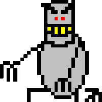

Har du ikke skrudd på iframes? Da må du finne ut selv når bussen går!
Python? Prøv dette:
pip install safety pip safety check --full-report
Dato for
curling
er bestemt! Det blir
27. mars kl. 16:00 - 18:00
kl.
16:00 - 18:00
i
Leangen Curlinghall
. Det er 10/10 påmeldte, kontakt Christian Neverdal for å komme på "venteliste". Dette blir gøy!


 Equinor/Skjermen
Equinor/Skjermen